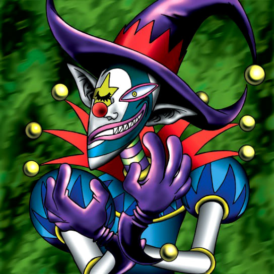

Saggi the Dark Clown

Description: "Strong in TOON terrain."
STATS
ATK: 600
DEF: 1500
DECK COST
Deck Cost per Card: 26
EFFECT IS IMPLEMENTED!
Fusion List (1 Possible Fusions)
Saggi the Dark Clown + Mechanical Spider = Disk Magician